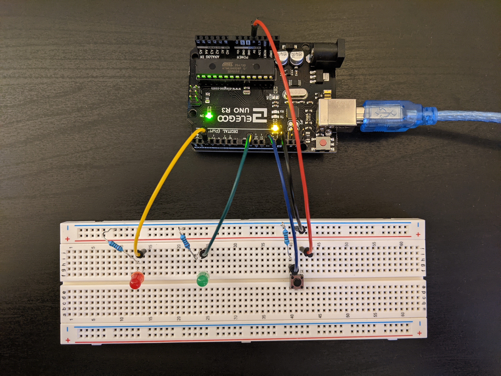

This is the schematic for my circuit. I utilized 220 Ohm resistors for the LEDs, and a 1000 Ohm resitor for my switch. Justification for these choices can be seen below Here is a picture of my implemented circuit. Red is power, black is ground, green is for the green LED, yellow is for the red LED, and blue is for the switch

This is the code for the circuit. I utilized a for loop to fade the green LED when the button is pressed. As explained below, I utllized a squared function to have a more appealing fade. Here is the circuit in action!